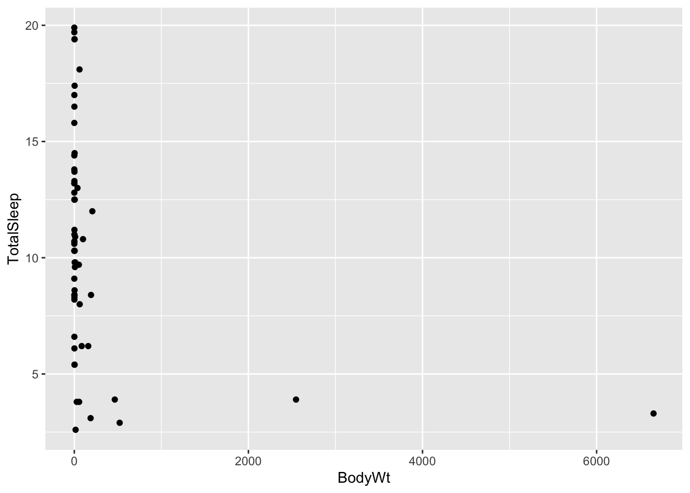

Chapter 6 Linear Models
We describe linear models in this chapter. First we need to load some libraries (and install them if necessary).
if (!require("tidyverse")) install.packages("tidyverse") # Library for data analysis
if (!require("stargazer")) install.packages("stargazer") # Library for producing pretty tables of estimates from linear models
if (!require("devtools")) install.packages("devtools")
if (!require("report")) devtools::install_github("easystats/report") # Library for producing nice verbose reports of linear models6.1 Fitting a simple linear regression
We’ll use a dataset published by Allison and Cicchetti (1976). In this study, the authors studied the relationship between sleep and various ecological and morphological variables across a set of mammalian species: https://science.sciencemag.org/content/194/4266/732
Let’s start by loading the data into a table:
allisontab <- read.csv("Data_allison.csv")This dataset contains several variables related to various body measurements and measures of sleep in different species. Note that some of these are continuous, while others are discrete and ordinal.
summary(allisontab)## Species BodyWt BrainWt NonDreaming
## Length:62 Min. : 0.005 Min. : 0.14 Min. : 2.100
## Class :character 1st Qu.: 0.600 1st Qu.: 4.25 1st Qu.: 6.250
## Mode :character Median : 3.342 Median : 17.25 Median : 8.350
## Mean : 198.790 Mean : 283.13 Mean : 8.673
## 3rd Qu.: 48.202 3rd Qu.: 166.00 3rd Qu.:11.000
## Max. :6654.000 Max. :5712.00 Max. :17.900
## NA's :14
## Dreaming TotalSleep LifeSpan Gestation
## Min. :0.000 Min. : 2.60 Min. : 2.000 Min. : 12.00
## 1st Qu.:0.900 1st Qu.: 8.05 1st Qu.: 6.625 1st Qu.: 35.75
## Median :1.800 Median :10.45 Median : 15.100 Median : 79.00
## Mean :1.972 Mean :10.53 Mean : 19.878 Mean :142.35
## 3rd Qu.:2.550 3rd Qu.:13.20 3rd Qu.: 27.750 3rd Qu.:207.50
## Max. :6.600 Max. :19.90 Max. :100.000 Max. :645.00
## NA's :12 NA's :4 NA's :4 NA's :4
## Predation Exposure Danger
## Min. :1.000 Min. :1.000 Min. :1.000
## 1st Qu.:2.000 1st Qu.:1.000 1st Qu.:1.000
## Median :3.000 Median :2.000 Median :2.000
## Mean :2.871 Mean :2.419 Mean :2.613
## 3rd Qu.:4.000 3rd Qu.:4.000 3rd Qu.:4.000
## Max. :5.000 Max. :5.000 Max. :5.000
## We’ll begin by focusing on the relationship between two of the continuous variables: body size (in kg) and total amount of sleep (in hours). Let’s plot these to see what they look like:
ggplot(allisontab) + geom_point(aes(x=BodyWt,y=TotalSleep))## Warning: Removed 4 rows containing missing values (geom_point).
Hmmm this looks weird. We have many measurements of body weight around 0 (small values) and a few very large values of thousands of kilograms. This is not surprising: given that this dataset spans several different species, the measurements spans several orders of magnitude (from elephants to molerats). To account for this, variables involving body measurements (like weight or length) are traditionally converted into a log-scale when fitted into a linear model. Let’s see what happens when we log-scale the body weight variable:
ggplot(allisontab) + geom_point(aes(x=log(BodyWt),y=TotalSleep))## Warning: Removed 4 rows containing missing values (geom_point).
A pattern appears to emerge now. There seems to be a negative correlation between the log of body weight and the amount of sleep a species has. Indeed, we can measure this correlation using the cor() function:
cor(log(allisontab$BodyWt), allisontab$TotalSleep, use="complete.obs")## [1] -0.5328345Let’s build a simple linear model to explain total sleep, as a function of body weight. In R, the standard way to fit a linear model is using the function lm(). We do so by following the following formula:
fit <- lm(formula, data)
The formula within an lm() function for a simple linear regression is:
\[\bf{y} \sim \bf{x_1}\] Where \(y\) is the response variable and \(x_1\) is the predictor variable. This formula is a shorthand way that R uses for writing the linear regression formula:
\[\bf{Y} = \beta_0 + \beta_1 \bf{x_1} + \bf{\epsilon}\]
In other words, R implicitly knows that each predictor variable will have an associated \(\beta\) coefficient that we’re trying to estimate. Note that here \(\bf{y}\), \(\bf{x_1}\), \(\bf{\epsilon}\), etc. represent lists (vectors) of variables. We don’t need to specify additional terms for the \(\beta_0\) (intercept) and \(\bf{\epsilon}\) (error) terms. The lm() function automatically accounts for the fact that a regression should have an intercept, and that there will necessarily exist errors (residuals) between our fit and the the observed value of \(\bf{Y}\).
We can also write this exact same equation by focusing on a single (example) variable, say \(y_i\):
\[y_i = \beta_0 + \beta_1 x_{1,i} + \epsilon_i\] In general, when we talk about vectors of variables, we’ll use boldface, unlike when referring to a single variable.
In our case, we’ll attempt to fit total sleep as a function of the log of body weight, plus some noise:
myfirstmodel <- lm(TotalSleep ~ log(BodyWt), data=allisontab)
myfirstmodel##
## Call:
## lm(formula = TotalSleep ~ log(BodyWt), data = allisontab)
##
## Coefficients:
## (Intercept) log(BodyWt)
## 11.4377 -0.7931This way, we are fitting the following model:
\[\bf{TotalSleep} = \beta_0 + \beta_1 \bf{log(BodyWt)} + \bf{\epsilon}\]
Remember that the \(\beta_0\) coefficient is implicitly assumed by the lm() function. We can be more explicit and incorporate it into our equation, by simply adding a value of 1 (a constant). This will result in exactly the same output as before:
myfirstmodel <- lm(TotalSleep ~ 1 + log(BodyWt), data=allisontab)
myfirstmodel##
## Call:
## lm(formula = TotalSleep ~ 1 + log(BodyWt), data = allisontab)
##
## Coefficients:
## (Intercept) log(BodyWt)
## 11.4377 -0.7931Exercise: the function attributes() allows us to unpack all the components of the object outputted by the function lm() (and many other objects in R). Try inputting your model output into this function. We can observe that one of the attributes of the object is called coefficients. If we type myfirstmodel$coefficients, we obtain a vector with the value of our two fitted coefficients (\(\beta_0\) and \(\beta_1\)). Using the values from this vector, try plotting the line of best fit on top of the data. Hint: use the geom_abline() function from the ggplot2 library.
6.2 Interpreting a simple linear regression
We can obtain information about our model’s fit using the function summary():
summary(myfirstmodel)##
## Call:
## lm(formula = TotalSleep ~ 1 + log(BodyWt), data = allisontab)
##
## Residuals:
## Min 1Q Median 3Q Max
## -6.6990 -2.6264 -0.2441 2.1700 9.9095
##
## Coefficients:
## Estimate Std. Error t value Pr(>|t|)
## (Intercept) 11.4377 0.5510 20.759 < 2e-16 ***
## log(BodyWt) -0.7931 0.1683 -4.712 1.66e-05 ***
## ---
## Signif. codes: 0 '***' 0.001 '**' 0.01 '*' 0.05 '.' 0.1 ' ' 1
##
## Residual standard error: 3.933 on 56 degrees of freedom
## (4 observations deleted due to missingness)
## Multiple R-squared: 0.2839, Adjusted R-squared: 0.2711
## F-statistic: 22.2 on 1 and 56 DF, p-value: 1.664e-05The summary() function provides a summary of the output of lm() after it’s been given some data and a model to fit. Let’s pause and analyze the output here. The first line just re-states the formula we have provided to fit our model. Below that, we get a summary (min, max, median, etc.) of all the residuals (error terms) between our linear fit and the observed values of \(\bf{TotalSleep}\).
Below that, we can see a table with point estimates, standard errors, and a few other properties of our estimated coefficients: the intercept (\(\beta_0\), first line) and the slope (\(\beta_1\), second line). The standard error is a measure of how confident we are about our point estimate (we’ll revisit this in later lectures). The “t value” corresponds to the statistic for a “t-test” which serves to determine whether the estimate can be considered as significantly different from zero. The last column is the P-value from this test. We can see that both estimates are quite significantly different from zero (P < 0.001), meaning we can reject the hypothesis that these estimates are equivalent to zero.
Finally, the last few lines are overall measures of the fit of the model. ‘Multiple R-squared’ is the fraction of the variance in \(\bf{TotalSleep}\) explained by the fitted model. Generally, we want this number to be high, but it is possible to have very complex models with very high R-squared but lots of parameters, and therefore we run the risk of “over-fitting” our data. ‘Adjusted R-squared’ is a modified version of R-squared that attempts to penalize very complex models. The ‘residual standard error’ is the sum of the squares of the residuals (errors) over all observed data points, scaled by the degrees of freedom of the linear model, which is equal to n – k – 1 where n = total observations and k = total model parameters. Finally, the F-statistic is a test for whether any of the explanatory variables included in the model have a relationship to the outcome. In this case, we only have a single explanatory variable (\(\bf{log(BodyWt)}\)), and so the P-value of this test is simply equal to the P-value of the t-test for the slope of \(\bf{log(BodyWt)}\).
We can use the function report() from the library easystats (https://github.com/easystats/report) to get a more verbose report than the summary() function provides.
report(myfirstmodel)## Formula contains log- or sqrt-terms. See help("standardize") for how such terms are standardized.
## Formula contains log- or sqrt-terms. See help("standardize") for how such terms are standardized.## We fitted a linear model (estimated using OLS) to predict TotalSleep with BodyWt (formula: TotalSleep ~ 1 + log(BodyWt)). The model explains a significant and substantial proportion of variance (R2 = 0.28, F(1, 56) = 22.20, p < .001, adj. R2 = 0.27). The model's intercept, corresponding to BodyWt = 0, is at 11.44 (95% CI [10.33, 12.54], t(56) = 20.76, p < .001). Within this model:
##
## - The effect of BodyWt [log] is significantly negative (beta = -0.79, 95% CI [-1.13, -0.46], t(56) = -4.71, p < .001; Std. beta = -1.16, 95% CI [-1.91, -0.41])
##
## Standardized parameters were obtained by fitting the model on a standardized version of the dataset.Note that this function “standardizes” the input variables before providing a summary of the output, which makes the estimates’ value to be slightly different than those stored in the output of lm(). This makes interpretation of the coefficients easier, as they are now expressed in terms of standard deviations from the mean.
Another way to summarize our output is via a summary table in , which can be easily constructed using the function stargazer() from the library stargazer (https://cran.r-project.org/web/packages/stargazer/index.html).
stargazer(myfirstmodel, type="text")##
## ===============================================
## Dependent variable:
## ---------------------------
## TotalSleep
## -----------------------------------------------
## log(BodyWt) -0.793***
## (0.168)
##
## Constant 11.438***
## (0.551)
##
## -----------------------------------------------
## Observations 58
## R2 0.284
## Adjusted R2 0.271
## Residual Std. Error 3.933 (df = 56)
## F Statistic 22.203*** (df = 1; 56)
## ===============================================
## Note: *p<0.1; **p<0.05; ***p<0.01This package also supports LaTeX and HTML/CSS format (see the type option in ?stargazer), which makes it very handy when copying the output of a regression from R into a working document.
Exercise: try fitting a linear model for \(\bf{TotalSleep}\) as a function of brain weight (\(\bf{BrainWt}\)). Keep in mind that this is a size measurement that might span multiple orders of magnitude, just like body weight. What are the estimated slope and intercept coefficients? Which coefficients are significantly different from zero? What is the proportion of explained variance? How does this compare to our previous model including \(\bf{BodyWt}\)?
Exercise: Plot the linear regression line of the above exercise on top of your data.
6.3 Simulating data from a linear model
It is often useful to simulate data from a model to understand how its parameters relate to features of the data, and to see what happens when we change those parameters. We will now create a function that can simulate data from a simple linear model. We will then feed this function different values of the parameters, and see what the data simulated under a given model looks like.
Let’s start by first creating the simulation function. We’ll simulate data from a linear model. The model simulation function needs to be told:
1) The number (\(n\)) of data points we will simulate
1) How the explanatory variables are distributed: we’ll use a normal distribution to specify this.
2) What the intercept (\(\beta_0\)) and slope (\(\beta_1\)) for the linear relationship between the explanatory and response variables are
3) How departures (errors) from linearity for the response variables will be modeled: we’ll use another normal distribution for that as well, and control the amount of error using a variable called sigma.res. We’ll assume errors are homoscedastic (have the same variance) in this exercise.
linearmodsim <- function(n=2, beta_0=0, beta_1=1, sigma.res=1, mu.explan=5, sigma.explan=1, rerror=rnorm, r_explan = rnorm, hetero = 0 ){
# Simulate explanatory variables
explan <- r_explan(n,mu.explan,sigma.explan)
# Sort the simulated explanatory values from smallest to largest
explan <- sort(explan)
# Standardize the response variables so that they are mean-centered and scaled by their standard deviation
explan.scaled <- scale(explan)
# OPTIONAL: If errors are heteroscedastic (hetero does not equal 0), then their standard deviation will not be constant, and will depend on the explanatory variables
sdev.err <- sapply(sigma.res + explan.scaled*hetero,max,0)
# Simulate the error values using the above-specified standard deviation
error <- rerror(n,0,sdev.err)
# Simulate response variables via the linear model
response <- beta_0 + beta_1 * explan + error
# Output a table containing the explanatory values and their corresponding response values
cbind(data.frame(explan,response))
}Exercise:
- Carefully read the code for the function above. Make sure you understand every step in the function.
- Plot the output of a simulated linear model with 40 data points, an intercept of 1.5 and a slope of 3. Simulate from the same model one more time, and plot the output again.
- Now, fit the data from your latest simulation using the
lm()function. Does your fit match your simulations?
- Try increasing the sample size (say, to 200 data points), and repeat the
lm()fitting. How does this influence the accuracy of your fitted model? Try simulating and fitting multiple times to get an idea of how well you can estimate the parameters.
- Try changing the standard deviation of the simulated residual errors (make
sigma.ressmaller or larger), and repeat thelm()fitting. How does this influence the accuracy of your fitted model?